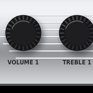
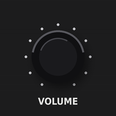
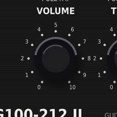

Verstärker-Simulatoren
Verstärker mit Bauteilwerten aus den Original-Schaltplänen und exakter Schaltungsberechnung. Auf dem Handy lassen sich die Seiten zum Startbildschirm hinzufügen und laufen dann auch offline.

AmpFett B-15NF PortaflexDer ganze Röhrenverstärker nach Werksschaltplan (1966): beide Kanäle, Phasenumkehr, Endstufe mit 6L6GC, Netzteil und Lautsprecher, geprüft gegen die Spannungstabelle des Werks.
GK 800RBDer Transistor-Bassverstärker nach dem Service-Manual (1991): Vorstufe mit −10 dB, LO CUT, MID CONTOUR, HI BOOST, vier Klangreglern und der BOOST-Stufe mit J113-FET, Bi-Amp-Weiche, beide Endstufen (300 W / 100 W) und Lautsprecher, geprüft gegen die Prüfpegel und Oszillogramme des Manuals.
Yamaha G100-212IIDer Transistor-Gitarrenverstärker nach dem Service Manual (1979): Kanal A sauber, Kanal B mit Begrenzerdioden und FET-Stufe, Zugschalter FAT und BRIGHT, parametrischer EQ, Federhall (Schaltung und Feder als physikalisches Modell), Endstufe mit Begrenzung; ohne Lautsprecher. Geprüft gegen die Prüftabellen des Manuals.Für die DAW
Laney AOR 50 Preamp als DAW-PluginDerselbe Rechenkern wie der Simulator für Linux x86-64 (REAPER 7, Bitwig, Ardour, Qtractor): Frontplatte zum Drehen, Röhrenverzerrung mit bis zu 8-facher Überabtastung, Stereo, Frequenzgang, Röhrenwahl, Lautsprecher, Umbauideen „Sanft" und „Später".
CLAP herunterladenVST3 herunterladen
Version 3.34 · je ZIP mit Anleitung (README.txt) · CLAP:
Laney_AOR50.clap nach ~/.clap · VST3: den Ordner Laney_AOR50.vst3 nach ~/.vst3 · danach REAPER neu starten. Beide Formate klingen gleich; ein Format genügt. Braucht glibc 2.38 oder neuer (Ubuntu 24.04, Debian 13 oder vergleichbar).
Yamaha B100-II Bass Amp als DAW-PluginDas PA-Board des Transistor-Combos (HIGH/LOW-Buchse, Volume, Treble, Middle, Bass, 5-Band-Equalizer), optional mit Endstufe (MA-Board, Begrenzung) und 15"-Lautsprecher; Frontplatte zum Drehen, Stereo, Frequenzgang.
CLAP herunterladenVST3 herunterladen
Version 1.16 · Installation wie beim Laney (
Yamaha_B100II.clap bzw. Ordner Yamaha_B100II.vst3). Gleiche Systemvoraussetzungen.
AmpFett B-15NF Bass Amp als DAW-PluginDer ganze Röhrenverstärker nach Werksschaltplan wie auf der Web-Seite: beide Kanäle mit den drei Eingangsbuchsen, Phasenumkehr mit Gegenkopplung, Endstufe mit 6L6GC, Netzteil mit 5AR4, Standby, optional Lautsprecher; Frontplatte zum Drehen, Aussteuerungsanzeige, Frequenzgang, Stereo, bis zu 4-fache Überabtastung.
CLAP herunterladenVST3 herunterladen
Version 1.16 · Installation wie beim Laney (
AmpFett_B15NF.clap bzw. Ordner AmpFett_B15NF.vst3). Gleiche Systemvoraussetzungen. Rechnet die ganze Schaltung samt Netzteil in jedem Abtastwert: je nach Rechner ein Viertel bis die Hälfte eines Prozessorkerns bei 48 kHz mit vollem Netzteil, mit dem einfachen (Grundstellung ab 1.15, ohne Brummen) etwa ein Fünftel weniger.
GK 800RB Bass Amp als DAW-PluginDer Transistor-Bassverstärker nach dem Service-Manual wie auf der Web-Seite: Vorstufe als Schaltung mit allen Schaltern, Klangreglern, BOOST (J113) und Bi-Amp-Weiche, beide Endstufen mit Begrenzung, optional Lautsprecher oder DIRECT OUT; Frontplatte zum Drehen, Aussteuerungsanzeige, Frequenzgang, Stereo, bis zu 4-fache Überabtastung.
CLAP herunterladenVST3 herunterladen
Version 1.1 · Installation wie beim Laney (
GK_800RB.clap bzw. Ordner GK_800RB.vst3). Gleiche Systemvoraussetzungen. Braucht etwa ein Zehntel eines Prozessorkerns bei 48 kHz und 1x, bei 2x (Grundstellung) ein Fünftel.
Yamaha G100-212II Guitar Amp als DAW-PluginDer Transistor-Gitarrenverstärker nach dem Service Manual wie auf der Web-Seite: beide Kanäle als Schaltung mit Zugschaltern, A/B-Taste, HIGH/LOW-Buchse, parametrischem EQ und Federhall (ab 1.1), Endstufe mit Begrenzung; Frontplatte zum Drehen, Aussteuerungsanzeige, Frequenzgang, Stereo, bis zu 4-fache Überabtastung. Ohne Lautsprecher.
CLAP herunterladenVST3 herunterladen
Version 1.1 · Installation wie beim Laney (
Yamaha_G100.clap bzw. Ordner Yamaha_G100.vst3). Gleiche Systemvoraussetzungen. Braucht etwa ein Fünftel eines Prozessorkerns bei 48 kHz und 1x, bei 2x (Grundstellung) knapp die Hälfte (seit 1.1 mit Hall).
Mac: alle Plugins für Logic ProInstallerpaket mit Laney AOR 50, Yamaha B100-II, AmpFett B-15NF, GK 800RB und Yamaha G100-212II als Audio Unit (Logic, GarageBand, MainStage) und VST3 (z. B. Ableton, Cubase, Waves StudioRack), für Apple Silicon und Intel ab macOS 11. Mit Frontplatte zum Drehen, Modell-Schaltern und Frequenzgang wie unter Linux.
Mac-Installer herunterladen
Laney 3.34 · Yamaha 1.16 · AmpFett B-15NF 1.16 · GK 800RB 1.1 · Yamaha G100-212II 1.1 · einzeln abwählbar · Doppelklick, durch den Installer klicken (Administrator-Passwort), Logic neu starten; die Plugins stehen unter Audio-FX → Audio Units → tonestack. Das Paket ist nicht bei Apple beglaubigt: beim ersten Öffnen unter Systemeinstellungen → Datenschutz & Sicherheit „Dennoch öffnen“ wählen (macOS 11–14: Rechtsklick → Öffnen). Logic nicht mit Rosetta starten: die Plugins laufen nativ auf Apple-Prozessoren, unter Rosetta deutlich langsamer.